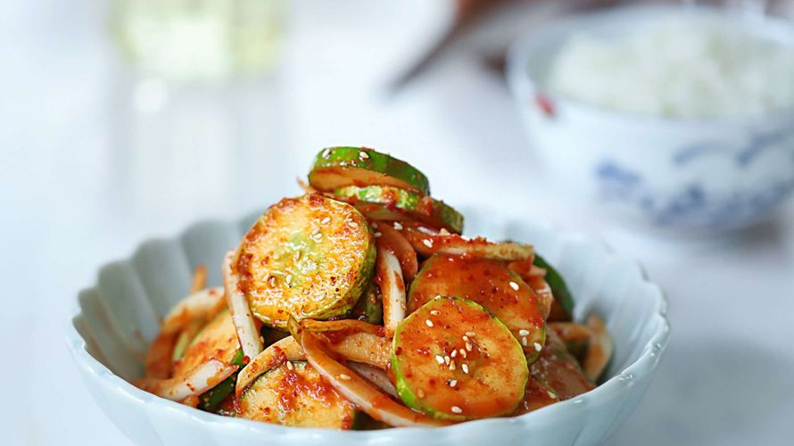

반찬류
간단 오이무침

소세지 야채 볶음
재료 준비
- 오이, 쪽파, 양파, 고추장, 고춧가루, 들기름, 참깨, 매실청
1. 오이, 쪽파, 양파를 썰어주세요
2. 고추장 1스푼, 고춧가루 1스푼, 들기름 1/2스푼, 참깨 1/2스푼, 매실청 1/2스푼을 섞어 양념장을 만들어주세요
3. 양념이 잘 베이도록 무쳐주세요

재료 준비
- 양파, 파프리카, 비엔나, 케찹, 올리고당, 진간장, 참기름, 다진마늘, 깨, 후추
1. 양파, 파프리카를 사각으로 잘라주세요
2. 비엔나에 칼집을 낸 후 끓는 물에 데쳐주세요
3. 케찹 3스푼, 올리고당 1스푼, 진간장 1스푼, 참기름 1/2스푼, 다진마늘 1/2스푼, 깨와 후추 조금을 섞어 양념장을 만들어주세요
4. 식용유를 조금 두르고 양파가 하얗게 될 때까지 모두 볶아주세요